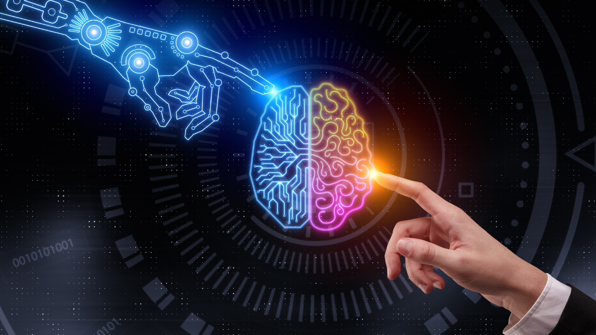
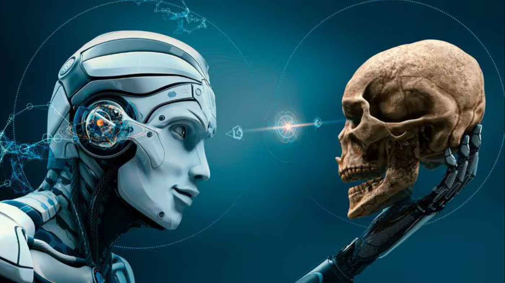

Impacto social y ético

La inteligencia artificial (IA) está revolucionando nuestra sociedad, pero también plantea importantes desafíos éticos y sociales. A continuación, te presento algunos de los principales impactos y dilemas que esta tecnología conlleva.
Impacto social y ético la IA
Impacto positivo
- Avances en la medicina: La IA está siendo utilizada para desarrollar nuevos tratamientos, diagnosticar enfermedades con mayor precisión y personalizar la atención médica.
- Mejora de la eficiencia: Desde la agricultura hasta la industria, la IA está optimizando procesos y aumentando la productividad.
- Desarrollo de nuevas tecnologías: La IA impulsa innovaciones como vehículos autónomos, realidad virtual y robótica.
- Facilitar la vida cotidiana: Asesores virtuales y aplicaciones inteligentes hacen nuestra vida más cómoda.
Impacto negativo y dilemas éticos
- Desempleo: La automatización puede llevar a la pérdida de empleos.
- Sesgos algorítmicos: Los sistemas de IA pueden perpetuar la discriminación.
- Privacidad: La recopilación masiva de datos plantea preocupaciones.
- Autonomía de las máquinas: Surgen preguntas sobre la responsabilidad legal y ética de las máquinas.
- Desinformación: La IA puede utilizarse para crear noticias falsas.
- Armas autónomas: El desarrollo de armas autónomas plantea graves riesgos.

Principales desafíos éticos
- Transparencia: Garantizar que los sistemas de IA sean comprensibles.
- Justicia: Evitar la discriminación en el diseño y uso de la IA.
- Responsabilidad: Establecer marcos legales para determinar la responsabilidad.
- Seguridad: Proteger los sistemas de IA de ataques cibernéticos.
- Privacidad: Proteger la privacidad de los datos personales.
¿Qué se está haciendo?
- Desarrollo de marcos éticos: Creación de principios y normas para la IA.
- Regulaciones: Implementación de nuevas leyes.
- Investigación: Comprender mejor los impactos y desarrollar tecnologías más seguras.
- Educación: Concienciar a la sociedad sobre los beneficios y riesgos.